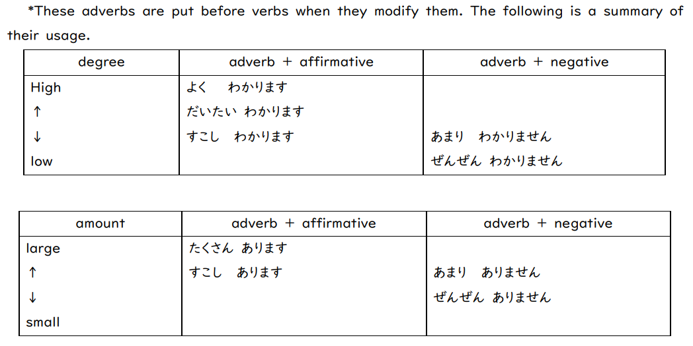

中学以来の再会 — 霓虹语入门
资深老二痴最喜欢的一集。为了学好这门课，这学期我还准备了丰富的霓虹语学习资源，包括 CLANNAD, Persona 4 Golden, 逆转裁判成步堂合辑与人龙 7 等精品 JRPG；足见我对学习的热爱。
抢这门课 (JAPN1088) 的一个小 tips：先 minor Japanese language 再 enroll，无压力选上。
This article is a self-administered course note.
It will NOT cover any exam or assignment related content.
平仮名と片仮名
| 字源 | ひらがな | カタカナ | 詞 |
|---|---|---|---|
| 安・阿 | あ | ア | 安全（あんぜん） |
| 以・伊 | い | イ | 以上（いじょ） |
| 宇 | う | ウ | 大宇宙（だいうちゅ） |
| 衣・江 | え | エ | 江戸（えど） |
| 於 | お | オ | 禍生於忽（かしょうおこつ） |
| 加 | か | カ | 加工（かこう） |
| 幾 | き | キ | 機能（きのう） |
| 久 | く | ク | 久美子（くみこ） |
| 計・介 | け | ケ | 計画（けいかく） |
| 己 | こ | コ | 自己満足（じこまんぞく） |
| 左・散 | さ | サ | 佐藤（さとう） |
| 之 | し | シ | 之字路（しじろ） |
| 寸・須 | す | ス | 一寸（いっすん） |
| 世 | せ | セ | 世界（せかい） |
| 曾 | そ | ソ | 小木曽 雪菜（おぎそ せつな） |
| 太・多 | た | タ | 太陽（たいよう） |
| 知・千 | ち | チ | 知識（ちしき） |
| 川 | つ | ツ | NA |
| 天 | て | テ | 天使（てんし） |
| 止 | と | ト | 止まる |
| 奈 | な | ナ | 奈良（なら） |
| 仁・二 | に | ニ | 任天堂（にんてんどう） |
| 奴 | ぬ | ヌ | 奴婢（ぬひ） |
| 祢 | ね | ネ | 祢豆子（ねずこ） |
| 乃 | の | ノ | 中野 二乃（なかのにの） |
| 波・八 | は | ハ | 電波（でんぱ） |
| 比 | ひ | ヒ | 比較（ひかく） |
| 不 | ふ | フ | 不思議（ふしぎ） |
| 部 | へ | ヘ | 部屋（へや） |
| 保 | ほ | ホ | 保護（ほご） |
| 末・万 | ま | マ | 末期（まっき） |
| 美・三 | み | ミ | 麻美子（まみこ） |
| 武・牟 | む | ム | 武蔵（むぞ） |
| 女 | め | メ | 乙女（おとめ） |
| 毛 | も | モ | 毛利 小五郎（もうり こごろう） |
| 也 | や | ヤ | 木之下 和也（きのした かずや） |
| 由 | ゆ | ユ | 由比ヶ浜 結衣（ゆいがはま ゆい） |
| 與 | よ | ヨ | 伊與（いよ） |
| 良 | ら | ラ | 阿良々木暦（あららぎ こよみ） |
| 利 | り | リ | 利用（りよう） |
| 留 | る | ル | 留学生（りゅがくせい） |
| 礼 | れ | レ | 礼儀（れいぎ） |
| 呂 | ろ | ロ | 風呂（ふろ） |
| 和 | わ | ワ | 平和（へいわ） |
| 遠・乎 | を | （ヲ） | NA |
| 无・尔 | ん | ン | NA |
文法授業 1
Affirmative sentence
銀時さんはさむらいです。
Negative sentence
- 神楽ちゃんは日本人じゃありません。(informal)
- 神楽ちゃんは日本人ではありません。(formal)
Question sentence
yes-or-no question. Adding か to the end of the sentence makes it a question.
- 新八君はめがねですか。 －はい、（新八君は）眼鏡です。
- 新八君は MADAO ですか。－いいえ、（新八君は）MADAOじゃありません。
question with interrogatives.
- あの人は 誰 ですか。(informal)
- あの方は どなた ですか。(polite)
N も
も is added after a topic instead of は when the statement about the topic is the same as previous one.
- 銀時さんは MADAO です。
- 長谷川さんも MADAO です。
N1 の N2
- の is used to connect two nouns. N1 modifies N2.
- 銀時さんは万事屋の旦那です。
- N1 explains what N2 is about.
- これはコンピューターの本です。
- N1 explains who owns N2. N2 is sometimes omitted when it is obvious.
- 这谁的书？- それはわたしの（本）です。
文法授業 2
これ／それ／あれ
- 离说者近 - 这：これは○○です。
- 离听者近 (日语特有)：あれは○○です。
- 离说者与听者远 - 那：それは○○です。
このN／そのN／あのN
相对位置后修饰名词时使用，相当于：这个/那个。
- この○○は○○です。
- その○○は○○です。
- あの○○は○○です。
そうです／そうじゃありません
そう常用于回答 yes-no question。相当于：是这样的/不是这样。
あなたはバカですが。
- はい、そうです。
- いいえ、そうじゃありません。
表示否定时，还可以用动词 違（ちが）います。
- いいえ、違います。
此外，常用的还有 そうですか，用来表示说话者了解了某个新信息，相当于：（原来）是这样/I see。
知ってる、私はバカです。
- そうですか。（流汗黄豆）
S1 か、 S2 か
S1 or S2？S1 还是 S2？二者择其一的问题；用 S1 或 S2 回答。
あなたは「バカ」ですか、「アホ」ですか。
- 「バカ」です。
文法授業 3
ここ／そこ／あそこ
- ここ：这里 - 说者所在的位置。
- そこ：听者所在的位置。
- あそこ：那里 - 离说者与听者远的位置。
注意一个特殊情况：当说者认为听者与他处在同一位置时，ここ 指说者与听者所在的位置，そこ 指离说者与听者两者 较 远的位置，あそこ 指更远的位置。
对应的 丁寧語 为：こちら、そちら、あちら。
N1 は N2 (place) です
particle は 的又一用法：用来表示 N1 在 N2 (位置) 处。
- 銀さんは万事屋です。
どこ／どちら
どこ 与 どちら 均表示哪里 (where)，其中 どちら 还有哪个方向 (which direction) 的含义。
- お手洗いはどこですか。
此外，这两个词还可以用来询问对方所属的组织。见下例，同样的问句可以得到两种回答：
- 学校はどこですか。
- (你学校在哪？) - 薄扶林です。
- (你学校是哪的？) - 香港大学です。
The prefix お
前缀 お 一般添加在某个名词前。当说者认为该名词是听者重要的属性时，在前面加上 お 以表示对听者的尊重。与中文的敬语作用一致 (如「贵姓」中的「贵」)。
- (where are you from?)［お］国はどちらですか。
文法授業 4
今‐時‐分‐です
表示时间的语句。对应的问句为：
- 今何時ですか。
注意到时间语句没有任何 particle。原因是因为主语与「は」particle 被省略了。这句话被省略的主语应当是说者所在的位置 (geographical location)。
用中文来说，我们平时所说的「现在几点钟？」是询问当下的时间；假如问者身处香港，他完整的表达应当是「现在香港 (是) 几点钟？」但这一信息过于显然，我们一般将其省略。
同样的逻辑，上述语句包含主语的完整版应当是：今、東京はなんじですか。
ます／ません
ます 型动词是 non-past tense (非过去时)。它指示 (一直持续的) 现在与未来。
- (present) habitual thing or a truth.
- (future) thing that will occur in the future.
ます 也是同类 predicate 中语气最礼貌的一个。
- (affirmative) 私は毎日勉強します。
- (negative) 私は毎日勉強しません。
- (question) あなたは毎日勉強しますか。
ました／ませんでした
ました 型动词是 past tense 与 perfect tense。它指示过去发生的事物或已经完成的事物。
- (affirmative) 私は昨日勉強しました。
- (negative) 私は昨日勉強しませんでした。
- (question) あなたは昨日勉強しましたか。
time に verb
に particle 连接时间与动作：我在什么时候做什么事情。
这里的时间指 time with a numeral (例，几点，几分，几月，几日)。当时间不包含 numeral 时，我们需要省略 に particle。星期几是一个 exception：你可以选择添加或省略 に particle。
- 7 月 2 日に日本へ来ました。
- 先週日本へ行きました。
- 日曜日［に］奈良へ行きます。
N1 から N2 まで
表示一段时间 (a period of time)。から 标记开始 まで 标记结束。
- 図書館は何時から何時までですか。
- 9 時から 5 時までです。
当然也可以在之后接动词：
- 久慈川さんは何時から何時まで働きますか。
N1 と N2
连接两个并列的 名词，即「和」。
- 銀行の休みは土曜日と日曜日です。
文法授業 5
N へ行きます／来ます／帰ります
当我们使用某动词表示移动到某个特定的地点时 (去/来/回)，在地点前加入 particle へ 指示移动的方向。
- (不在校内) 私毎日学校へ行きます。
- (在校内) 私毎日学校へ来ます。
どこも行きません／ませんでした
经典：我哪里都没去。另外这也是一种 pattern: interrogative + particle も 表否定。
谁都不在：誰もいませ。
N (vehicle) で行きます／来ます／帰ります
particle で 表某种方式：因此当动词表示移动时，使用 で 来指示移动的方式。
- 電車で行きます。
- タクシーで来ました。
注意一个 exception：步行。步行我们使用特殊的表达 歩いて；此时我们不用 で。
- 駅から歩いて帰ります。
N (person) と V
当你与某人一起进行某个动作时，使用 particle と 来标记这个人。
- 家族と日本へ行きました。
当只有一个人时，使用特殊的表达 一人で (ひとりで)。
- 一人で日本へ行きました。
いつ
最 general 的时间 interrogative。何時何分／何曜日／何日 的集大成者。至于回答则根据语境而定；如果需要更 specific 的回答，则可以进一步使用其他时间 interrogative 进行提问。
- いつ日本へ来ますか。
- 3 月 5 日に来ます。
- 来週来ます。
- 火曜日来ます。
- 誕生日はいつですか。
- 二月七日 (なのか) です。
此外，当使用 いつ 询问具体时间时，不要添加 particle に。
- 試験は何時に始まりますか。
- 試験はいつ始まりますか。
文法授業 6
N を V (transitive)
我喝橙汁：ジュースを飲みます。
新的 particle を 出现了！It is used to indicate the direct object of a transitive verb (及物动词).
注意一个很特殊的动词 します：它相当于中文中的 做某事，范围相当广。
- "play" sports/games: サッカーをします、トランプをします
- "hold" gathering: 会議をします
- "do" something: 宿題をします
何
用于询问“什么”：何 (なに) をしますか。何 (なに) を買いますか。
我们已经接触过「何」这个疑问词了：它有两种读法，分别是 なん 与 なに。只有在下述情况下「何」读作 なん，其余场合下我们使用 なに 即可：
- precedes a word whose first mora is either in the た, だ, or な-row (得忒呢). ex. なんですか、なんの本ですか、なんと言いますか
- when it is followed by counter suffix. ex. なん歳、なん時なん分
N (place) で V
在某地做某事：这里，で particle 只是行动发生的位置。
我在车站买了报纸：駅で新聞を買います。
注意与去/来某地相区分，也就是说，当 V 为 行きます 或 来ます 时，对应的 particle 应该是 へ 而不是 で。
V ませんか
邀请对方做某事时的问句。不去 (一起) 做某事吗？对应的肯定/否定一般来说是：
- ええ、V ましょう。
- すみません、ちょっと…
文法授業７
N(tool/mean) で V
之前我们学过用 で 指示去某地所乘坐的交通工具。这里的 で 本质上是一样的，表示用什么 (方法或工具) 进行对应的行动。
- (tool) 箸で食べます。
- (mean) 日本語でレポートを書きます。
还有一个常见的例子是询问某个概念在某语言中的讲法，即 ~語でなんですか。
- 「謝謝」は日本で何ですか。
N (person) に あげます, etc.
这里的 particle に 指示主动动作的接受者，即类似 あげます、貸します、教えます 这类动词的受者。
- 彼女にプレゼントをあげます。([I] give present to girlfriend. 女友是受者)
- 郡司さんは私に日本語を教えます。(Mr.Gunji teaches Japanese to me. 我是受者)
当受者非人 (例某组织等) 时，可以使用 へ 来代替 に：会社に (へ) 電話を掛けます。
N (person) に もらいます, etc.
虽然这里同样使用 particle に，但含义与上一个完全不同。这里它指示的是被动动作的施加者，即类似 もらいます、借ります、習います 这类动词的施者。
- 彼女は私にプレゼントをもらいます。(My girlfriend receives present from me. 我是施者)
- 私は郡司さんに日本語を習います。 (I learn Japanese from Mr.Gunji. 郡司是施者)
当施者非人时，使用 から 而不是 に：大学から給料をもらいます。銀行からお金を借ります。
もう V ました
完成时的一种形式，意为已经做了某事。对于某件应做的事，经常有提问：もう宿題をしましたか。
- ええ、［もう］しました。
- いいえ、まだです。
まだ 意为现在还 (没有)，相当于 yet。如果直接否定 (いいえ、しませんでした) 单纯表示你没有做对应的事，没有完成时的对应含义。
文法授業 8
形容詞
日语中有两种形容词，分别为 な-形容词与 い-形容词。他们的用法分别是：
- N は な-adj [✕ な] です。
- N は い-adj [～い] です。
否定用法为：
- N は な-adj [✕ な] じゃありません。
- N は い-adj [✕ い] くないです。
疑问用法同样遵循上述规则，加上疑问词 か 即可。需要注意的是，对于形容词的 です 类疑问句，我们不能用 そうです 或者 そうじゃありません 来回答：他们是针对名词的 です 类疑问句的。
| な-形容詞 | い-形容詞 |
|---|---|
| 雪子さんはきれいです。 | 富士山は高いです。 |
| 雪子さんはきれいじゃありません。 | 富士山は高くないです。 |
| 雪子さんはきれいですか。 | 富士山は高いですか。 |
形容詞 + N
な-形容词与 い-形容词修饰名词时的表现也很不同。
- な-adj + な + N. きれい[な]人
- い-adj + N. 高い山
とても／あまり
程度副词，表示非常… (肯定) 和不是很… (否定)。
- 北京はとても寒いです。
- 上海はあまり寒くないです。
あまり 有时也作 あんまり。
N はどうですか
どうですか 用于询问对某事物的印象，看法，观点等。
日本の生活はどうですか。
N1 はどんな N2 ですか
希望对方对 N1 进行描述或者解释，通常用形容词进行回答。注意区分和 なんの N2 的区别。
奈良はどんな町ですか。
古い町です。
S1 が、 S2
如果…但是…句式。
日本の食べ物はおいしいですが、高いです。
どれ
即 which，哪个？
私の傘はどれですか。
あの青い傘です。
文法授業 9
N があります／わかります
一般来说，及物动词的宾语 (object of a transitive verb) 用 particle を 标记；但一部分特殊的动词 (通常描述 preference, ability, possession, and the like) 用 particle が 标记。
例如：N が好きです／嫌いです／上手です／下手です／得意です／苦手です
どんな N
どんな 的另一种用法。一般来说，どんな 疑问常用形容词作为回答；但当 N 是某个宽泛的名词时，我们也能用 N 的具体种类 (category) [名词] 作为回答。
どんなスポーツが好きですか。
サッカーが好きです。
S1 から、S2
表因果关系，S1 是造成 S2 的原因。
たくさん宿題がありますから、日曜日に図書館へ行きます。
時間がありませんから、(○○をしません)
どうして
典中典之多西跌！询问某事的原因。回答一般包含「から」。
どうして一緒にご飯お食べませんか。
友達と約束がありますから。
よく／大体／たくさん／少し／あまり／全然
一系列程度副词，修饰动词/形容词。

少し 与 全然 用于修饰形容词：
- ここは少し寒いです。
- あの映画は全然面白くないです。
文法授業 10
N1 に N2 がいます／あります
N1 (某地) 有 N2 (某人/物)。
- 当 N2 是物时 (任何不能自主移动的对象)，使用 あります，即 在ります
- 当 N2 是人/动物时 (能够自主移动的对象)，使用 います，即 居ます
英语中对应的是 There is something (N2) in someplace (N1).
N2 は N1 にいます／あります
N2 (某人/物) 在 N1 (某地)。
同上，根据 N2 能否自主移动选择使用 います／あります。
虽然 something is in someplace 的含义与 there is something in someplace 一致，但注意它们强调上的微小区别。N1 に N2 がいます 是一种朴素的描述，而 N2 は N1 にいます 更加强调作为主体 的 N2。
N1 や N2
使用 と 连接多个名词代表 enumerates all the items，而使用 や 连接则代表 shows a few representative items。や…まど 可以翻译为英文中的 etc. 或中文中的之类。
例：箱の中に手紙や写真などがあります。盒子里有信与照片之类的东西。若将 や…まど 替换成 と 则表示盒子里只有信和照片这两件物品。
語彙
这里记录一下容易忘掉的词汇。(外来语真是阿米诺斯了)
- ノート (note 是 to)
- カード (card 是 do)
- ボールペン (ballpoint pen)
- シャープペンシル (mechanical pencil - sharp pencil)
- チョコレート (chocolate)
- コーヒー (coffee)
- ロビー (lobby)
- ワイン (wine)
- なんぷん 何分
- ばん 晚 (不是 man，是 ban)
- しけん 試験 (是 shi ken，不是 ji ken；注意 験 的写法)
- x日：尤其注意 8 日，10 日，20 日
- なんがつ 何月 (注意，x月与何月都是 gatsu；先/今/来月都是 getsu)
- しんかんせん 新幹線 (the bullet train；注意 幹 的写法)
- べんごし 弁護士
- かんごし 看護師 (注意 士 & 師 均是 shi。注意 護 的写法，右边是草字头)
- つうやく 通訳
- てんいん 店員 (店 是 ten 不是 den)
- けいたいでんわ 携帯電話 (帯 是 tai 不是 dai)
- うでどけい 腕時計 (u de do kei，但 時計 是 to kei)
- ゆうえんち 遊園地 (注意 園 字的写法，袁 字不加勾)
- 始まります (to be started，注意这里使用的汉字是 始 而不是 初，两者都是 haji)
- 営業時間 えいぎょうじかん (注意 営 的写法)
- 祝日 しゅくじつ (national day, festival day)
- [お] 正月 しょうがつ (first three days of the New Year)
Reference
This article is a self-administered course note.
References in the article are from corresponding course materials if not specified.
Course info: JAPN1088 taught by Takuya Gunji (郡司 拓也).
Course textbook: みんなの日本語 初級 1 (第 2 版) - スリーエーネットワーク.